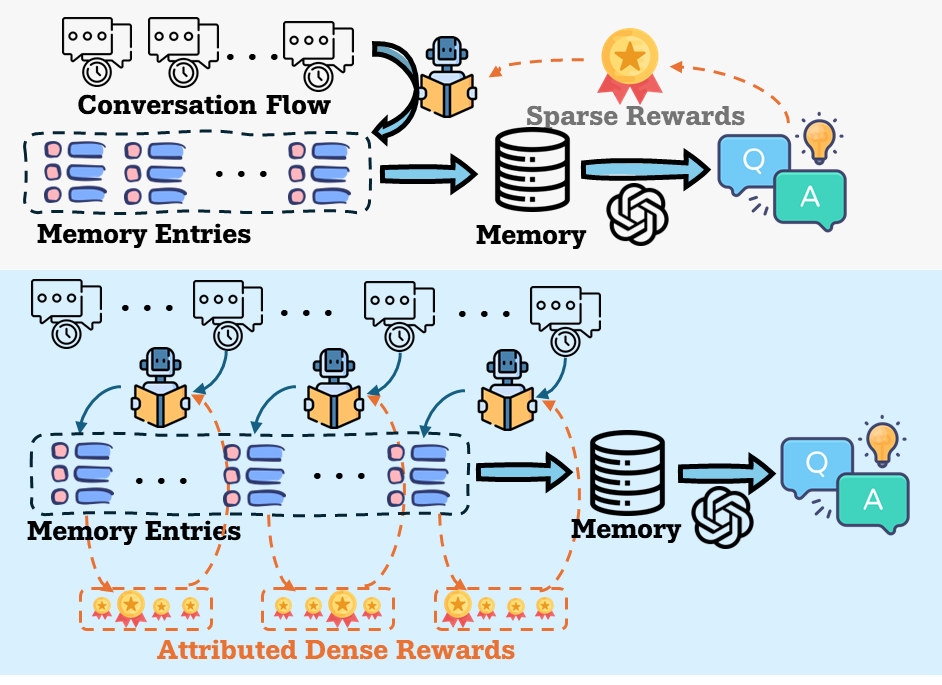
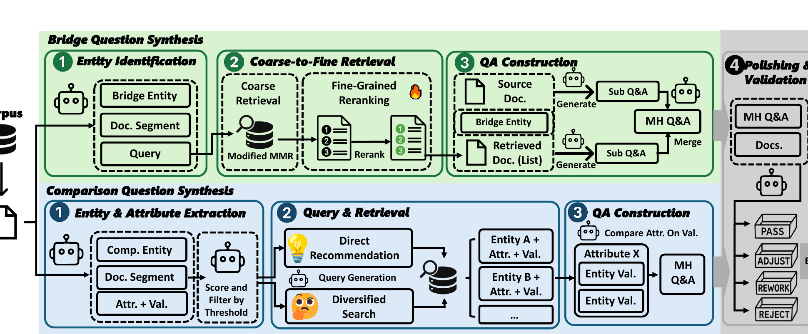
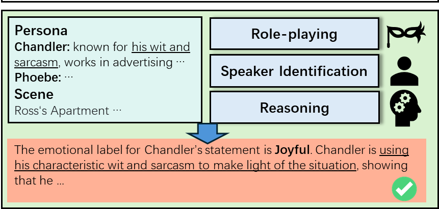

MemBuilder preprint released on arXiv.
About
Zhiyu Shen
M.S. Student, School of Computer Science and Engineering, Sun Yat-sen University
I am a second-year Master's student at Sun Yat-sen University, advised by Prof. Yanghui Rao. My research interests include long-term memory for LLM agents, multi-hop reasoning, and emotion recognition in conversations, with a focus on reinforcement learning and agentic approaches.
I am seeking internship opportunities for Summer 2026.
News
One paper (CARE) accepted at EMNLP Main 2025.
Started internship at Tencent Peace Elite Division.
HopWeaver preprint released on arXiv.
One paper (CoE) accepted at ACL Main 2025.
Started M.S. at Sun Yat-sen University.
One paper (DesignQuizzer) published at CSCW 2024.
Started internship at Tencent TEG AI Lab.
EDUCATION
Sun Yat-sen University
Advisor: Prof. Yanghui Rao
Sun Yat-sen University
Undergraduate studies focused on AI foundations, language technologies, and machine learning.
INTERNSHIPS
Applied Research Intern
Tencent IEG Lightspeed Studios
Worked on game AI speech systems, long-term user memory, and spoken intent understanding for Peace Elite.
Applied Research Intern
Tencent TEG AI Lab
Worked on emotion and motion understanding for virtual humans and narrative CG animation systems.
SELECTED PUBLICATIONS

MemBuilder: Reinforcing LLMs for Long-Term Memory Construction via Attributed Dense Rewards
We introduce MemBuilder, a reinforcement learning framework that trains a 4B-parameter model to orchestrate multi-dimensional memory construction with attributed dense rewards, outperforming Claude 4.5 Sonnet on long-term dialogue benchmarks.


OTHER PUBLICATIONS
Collaborative and earlier work.